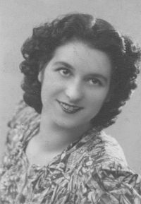

Nel 1921, il 3 aprile, Corrado Marchetti si trasferì al Poggio al Sale proveniente dal territorio di Monteriggioni, ma sempre dal popolo di Basciano. E' un bracciante e si sposta secondo il lavoro. Il primo figlio Guerriero è nato a Sovicille nel 1913, Ada nel 1917 a Monteroni, Alfio nel 1920, battezzato a Basciano, e Nella del 1923 anch'essa battezzata a Basciano. La tappa successiva fu Quercegrossa nelle case del Mencherini al Leccino Nuovo. Incerta la data dell'arrivo, forse il 1933/34. La famiglia di cinque elementi è al completo con il maggiore Alfio già 20enne. Sono tutti braccianti e incominciano a lavorare anche in miniera. Poi nel dopoguerra Guerriero se ne va e anche Ada parte sposando un Giulio Manganelli di Castellina in Chianti, ma fattore a Chianni vicino Volterra.

Nella Marchetti
Arrivò infine quel 18 luglio del 1947, tuttora vivo nella mente della gente di Quercegrossa per la pena e il dolore della disgrazia capitata ad Alfio. Come tutti i minatori, il pomeriggio dava una mano ai contadini per i vari lavori. Un aiuto anche interessato quella volta, perché dato alla famiglia della fidanzata, una Buti dell'Arginano. Trasportavano col carro le manne dai campi all’aia per la tribbiatura; c'era anche Aldo Riversi ad aiutare. Alfio è in piedi su davanti del carro. Improvvisamente una tavola del carro si schioda o si rompe sotto il peso dell'uomo che cade lateralmente su uno degli affilati pali verticali del carro. Il palo, come una lancia, gli si conficcò nel fianco ferendolo mortalmente. Soccorso immediatamente, venne portato in casa Buti, tra la disperazione e lo sconforto di tutti. Il telefono ancora non c'era a Quercia, e qualcuno si recò al Castagno per chiamare l'ambulanza. Ci volle del tempo e quando riparti dall’Arginano per l'Ospedale era evidente il suo grave stato. Morì, infatti, all'Ospedale dopo cinque giorni di sofferta agonia e fu riportato subito a casa. Don Luigi scrisse:
"... e morì in detto giorno alle ore 4,30 proveniente dall'ospedale di Siena in età di anni 27". La Nazione riportò così il fatto:
"Una brutta ferita sul lavoro. Il minatore 27enne Alfio Marchetti di Corrado da Quercegrossa rimaneva vittima a tarda ora del giorno 18 u.s. di una grave disgrazia. Infatti verso le ore 21 veniva urgentemente chiamata l'autoambulanza della Misericordia, che trasportava prontamente il ferito al Policlinico. Il sanitario di turno riscontrava una ferita lacero contusa da impalamento dell'ipocondrio sinistro sul prolungamento ascellare anteriore penetrante in cavità toracica. Il Marchetti si era ferito nel lavoro e il sanitario di turno data la gravità si è riservata la prognosi". Sembrava proprio segnato il destino di Alfio: la settimana precedente in miniera gli s'era sganciato un carrello e si era salvato per miracolo. Alla mamma Bruna gli fu risparmiato il dolore perché era morta due anni prima, il 3 febbraio del 1945. Rimasero Corrado e Nella fino al 1956 quando a seguito del matrimonio di quest'ultima con
"l'agricoltore" Luigi Pepi si trasferirono tutti a Siena.
MARGIACCHI (1942-1945); fattori; Passeggeri.
Giuseppe Margiacchi fu il fattore che rilevò il posto del Vannini Ezio a Passeggeri sotto il Sarrocchi. Prese dimora nel 1942 e vi rimase per tre anni. La moglie Dina Morelli gli aveva dato Gabriella nel 1944 poi, nel 1945, partì per Panzano.
MARIOTTI (1957 - ?); mezzadri; Monastero.
Famiglia di coloni che sostituì a Monastero i Baldi in partenza per Casapera. Il 16 giugno 1957 muore Sergio
“di ore 1”, figlio di Elio di Ottavio Mariotti e di Rina Perugini di Emilio; battezzato dalla levatrice. Non ci sono altri dati.
MARRADI (1925-1940); mezzadri; Gallozzole; da Lilliano.
Coloni iscritti alle Gallozzole dove dimorarono dal 1925 al 1940, i Marradi, insieme ai Ciupi e ai Nannini, occuparono uno dei tre poderi delle Gallozzole nel periodo fra le due guerre. Vi entrarono il 19 marzo del 1925 provenienti da Lilliano dopo che avevano dimorato a Rencine e a S. Leonino dal 1896 al podere Casetto di Montespertoli. Qui l’anziano Michele del fu Giovanni viveva con il figlio Francesco, la nuora Elvira dello Spedale e i nipoti Modesta, Giuseppe e Luigi. Emilio deve ancora nascere.
A Quercegrossa, venticinque anni dopo, invece è capoccio Emilio del fu Francesco coniugato con Giulia Focardi di Lornano fin dal 5 febbraio 1914. Giulia era nata all’Olmicino il 4 gennaio 1888. Emilio ebbe da Giulia quattro femmine e nessun maschio: Primetta, Giselda, Maria e Nella. L’altro nucleo che formava la famiglia era composto dai nipoti Nello, Gino e Gina figli del defunto Giuseppe. Nove persone quando arrivarono, dieci nel 1936. Alla morte di Primetta nel 1930 all'età di 15 anni e alla partenza di Gina entrata in casa Ciupi nel 1933 come moglie di Armando, si contrapponevano gli arrivi di Tommaso Focardi, uno zio di Giulia, vedovo, e il matrimonio di Nello con Clara Corsi. Si arriva così all'anno 1940 e tutta la famiglia Marradi si trasferisce tra gennaio e febbraio nel popolo di Basciano. Ritornerà soltanto Gino, uno o due mesi dopo, per prendere in moglie nella chiesa di Quercegrossa la fanciulla Ada Testi figlia del fu Agostino della Casanuova. Era il 13 aprile 1940 e qualcuno si ricorda ancora di loro.
MARRI (1936 - 1960 ca.); mezzadri; Gallozzole/Mulino; da Gardina.
Anche se oggi nessuno dei Marri fa parte del popolo di Quercegrossa, in molti ricordano Giorgio il calzolaio e conoscono Nicola suo figlio residente sopra Riccieri. Di certo alcuni si ricordano di Mario che abitava al Mulino e tutti quanti sono parte di quella famiglia che Desiderio Marri portò a Quercegrossa nel 1936 quando entrarono alle Gallozzole provenienti da Gardina. Erano in precedenza vissuti cinque anni a Gardina, dal 1930, sotto i Festa, lasciata si dice per un litigio tra Giovanni e il padrone sull'attribuzione del maiale più grasso. Ma le loro origini più solide erano nella Montagnola e precisamente a Pernina dove Desiderio era nato il 21 giugno del 1884 figlio di Giulio e di Ersilia Galardi. Nel 1907 aveva preso moglie a Pievescola Maddalena Peccianti nata a Marmoraia nel 1892 e sorella di quel Virgilio Peccianti che troveremo alle Gallozzole dal 1940 probabilmente chiamato dalla sorella. I suoi sei figli, nati ad Ancaiano dove risiedevano prima di Gardina, trovarono tutti la loro sistemazione ad incominciare dalle donne con Giulia che prese Leonardo Boschi delle Badesse; Giuseppa che sposò un certo Natale delle Rocche e poi in seconde nozze il dr. Martini, e infine Livia moglie di Gino Barucci nel 1946. Dei tre maschi il maggiore Giovanni (1910) si sposò a Lornano il 19 novembre 1933 con Ida Casagli di quella parrocchia e nacquero Giuliano (1934) e Giorgio (1936); Livio (1925) tornerà a Prato con la moglie per morirvi anni dopo; Gusmano sposerà al Poggiolo nel 1942 Dina Sani di Massina e avrà Mario il 6 gennaio 1943. A seguito di tutti questi eventi troviamo che i Marri nel dopoguerra formano una famiglia di dieci componenti e li aspetta ancora una permanenza di dieci anni sulle terre delle Gallozzole prima di dividersi nel 1955 e lasciare il podere. Gusmano al Mulino al posto del Bonelli, dove risiederà pochi anni prima di tornare a Siena dove abita già Giovanni.
Maddalena Peccianti e Desideri Marri.
MARTINI (1921-1921); Quercegrossa.
Pia Martini abitava al Palazzaccio e vi morì il 6 maggio del 1921 alle ore 17,20 in età di 47 anni. Di condizione nubile l’unica notizia che abbiamo ci è data dalla sua morte. Forse vi abitava da cinque/sei mesi, da quando il Palazzaccio era stato lasciato dai Mori trasferiti nella villa.
Inizio pagina
Indice famiglie del '900
Indice dei Capitoli